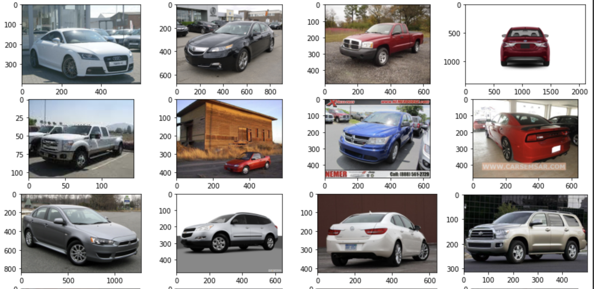
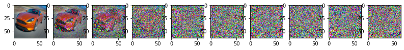

生成模型前段时间一直是很火的话题,之前的gpt,然后ai画图以及不久前的ai生成视频都证明生成模型是很有潜力的研究方向. 今天kaggle看的topic是一个GAN,直接让我想起了之前看的diffusion model一直没来得及写. 所以这里先把diffusion model写完然后等明天或后天写一下GAN相关. 这里我参考的教程主要是youtube上面的diffusion model from scratch in PyTorch, 而他的notebook也以及在GoogleColab上了.
工作原理
正向过程: 向某类图片持续添加噪音直到整个图片完全变成噪音. 逆向过程: 通过从纯噪音逆向逐步去除噪音达到生成特定图片的目的.
整个过程中下一个图片仅与上一个图片相关(markov chain).
其中没有任何噪音的图片我们记为$ x_0 $,
纯噪音我们记为$ x_t $. 整个正向过程表现为:
\[ q(x_t|x_{t-1}) = N(x_t;\sqrt{1-\beta_t}x_{t-1}, \beta_tI) \]
其中$ x_t $是输出, 公式表示均值为$ x_{t-1} $ , 方差为 $
\beta_tI $ 的高斯分布.
然后依据数学推导,我们可以直接得到从 $ x_0 $ 到 $ x_t $ 的推导: $ q(x_t|x_0) = N(x_t;\sqrt{\overline\alpha_{t}}x_0, (1-\overline\alpha_t)I) $
其中 $ \alpha_t = 1 - \beta_t $, $ \overline\alpha_t = \prod_{s=1}^t \alpha_s $
这个过程可以换元加高斯分布相加证明.
代码部分
数据集相关
1 | import torch |
首先斯坦福大学的汽车数据集. 展示一下训练的图片大概长什么样子. 
beta和alpha计算
1 | import torch.nn.functional as F |
这个部分主要是通过linspace生成均匀划分为T的一个范围, 然后依据这些生成 $ alpha $ , $ alpha $ 的累乘. 关键部分为forward_diffusion_sample这个函数,这个函数生成的数据即为我们上面公式写到的数据, 这个函数的作用也就是获取图片 $ x_0 $ 在第t步的时候加上了噪音的样子.
载入数据查看noising效果
1 | from torchvision import transforms |
然后这里定义读取图片时应该进行的transform以及输出图片的时候的reversetransform函数,然后调用forward_diffusion_sample来查看noising的效果.

Unet
ok,到这里准备工作就差不多了. 接下来看下unet的结构 1
2
3
4
5
6
7
8
9
10
11
12
13
14
15
16
17
18
19
20
21
22
23
24
25
26
27
28
29
30
31
32
33
34
35
36
37
38
39
40
41
42
43
44
45
46
47
48
49
50
51
52
53
54
55
56
57
58
59
60
61
62
63
64
65
66
67
68
69
70
71
72
73
74
75
76
77
78
79
80
81
82
83
84
85
86
87
88
89
90
91
92
93
94
95
96
97
98
99
100
101
102
103
104from torch import nn
import math
class Block(nn.Module):
def __init__(self, in_ch, out_ch, time_emb_dim, up=False):
super().__init__()
self.time_mlp = nn.Linear(time_emb_dim, out_ch)
if up:
self.conv1 = nn.Conv2d(2*in_ch, out_ch, 3, padding=1)
self.transform = nn.ConvTranspose2d(out_ch, out_ch, 4, 2, 1)
else:
self.conv1 = nn.Conv2d(in_ch, out_ch, 3, padding=1)
self.transform = nn.Conv2d(out_ch, out_ch, 4, 2, 1)
self.conv2 = nn.Conv2d(out_ch, out_ch, 3, padding=1)
self.bnorm1 = nn.BatchNorm2d(out_ch)
self.bnorm2 = nn.BatchNorm2d(out_ch)
self.relu = nn.ReLU()
def forward(self, x, t, ):
# First Conv
h = self.bnorm1(self.relu(self.conv1(x)))
# Time embedding
time_emb = self.relu(self.time_mlp(t))
# Extend last 2 dimensions
time_emb = time_emb[(..., ) + (None, ) * 2]
# Add time channel
h = h + time_emb
# Second Conv
h = self.bnorm2(self.relu(self.conv2(h)))
# Down or Upsample
return self.transform(h)
class SinusoidalPositionEmbeddings(nn.Module):
def __init__(self, dim):
super().__init__()
self.dim = dim
def forward(self, time):
device = time.device
half_dim = self.dim // 2
embeddings = math.log(10000) / (half_dim - 1)
embeddings = torch.exp(torch.arange(half_dim, device=device) * -embeddings)
embeddings = time[:, None] * embeddings[None, :]
embeddings = torch.cat((embeddings.sin(), embeddings.cos()), dim=-1)
# TODO: Double check the ordering here
return embeddings
class SimpleUnet(nn.Module):
"""
A simplified variant of the Unet architecture.
"""
def __init__(self):
super().__init__()
image_channels = 3
down_channels = (64, 128, 256, 512, 1024)
up_channels = (1024, 512, 256, 128, 64)
out_dim = 3
time_emb_dim = 32
# Time embedding
self.time_mlp = nn.Sequential(
SinusoidalPositionEmbeddings(time_emb_dim),
nn.Linear(time_emb_dim, time_emb_dim),
nn.ReLU()
)
# Initial projection
self.conv0 = nn.Conv2d(image_channels, down_channels[0], 3, padding=1)
# Downsample
self.downs = nn.ModuleList([Block(down_channels[i], down_channels[i+1], \
time_emb_dim) \
for i in range(len(down_channels)-1)])
# Upsample
self.ups = nn.ModuleList([Block(up_channels[i], up_channels[i+1], \
time_emb_dim, up=True) \
for i in range(len(up_channels)-1)])
# Edit: Corrected a bug found by Jakub C (see YouTube comment)
self.output = nn.Conv2d(up_channels[-1], out_dim, 1)
def forward(self, x, timestep):
# Embedd time
t = self.time_mlp(timestep)
# Initial conv
x = self.conv0(x)
# Unet
residual_inputs = []
for down in self.downs:
x = down(x, t)
residual_inputs.append(x)
for up in self.ups:
residual_x = residual_inputs.pop()
# Add residual x as additional channels
x = torch.cat((x, residual_x), dim=1)
x = up(x, t)
return self.output(x)
model = SimpleUnet()
print("Num params: ", sum(p.numel() for p in model.parameters()))
model
这里的block作为unet的每层处理,下面的unet类直接对block进行堆叠,position_embedding作为position的记录,通过对cos和sin的concat来实现. 需要注意网上一般常见的unet都是有pool的,作者的上一版notebook也是有pool的,但现在已经换成了BN层.
Loss
1 | def get_loss(model, x_0, t): |
通过forward_dissusion_sample计算 $ x_0 $ 在第t步noising的值作为target, 模型输出值为noise_pred,然后计算f1_loss
train
1 |
|
前面的sample_timestep返回的是论文中的ALGO2.sampling. 然后后续就是画出每一步的生成图了.
train是取0-T中的随机整数作为timestep然后训练. 训练过程中调用sample_plot_image查看结果.